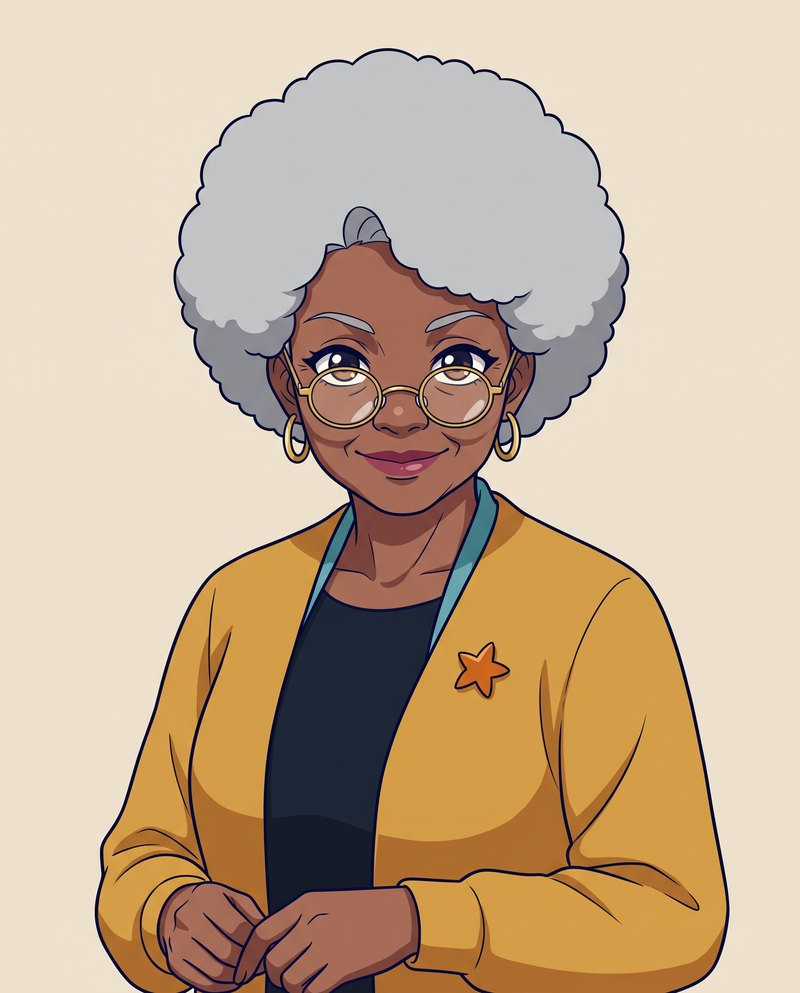
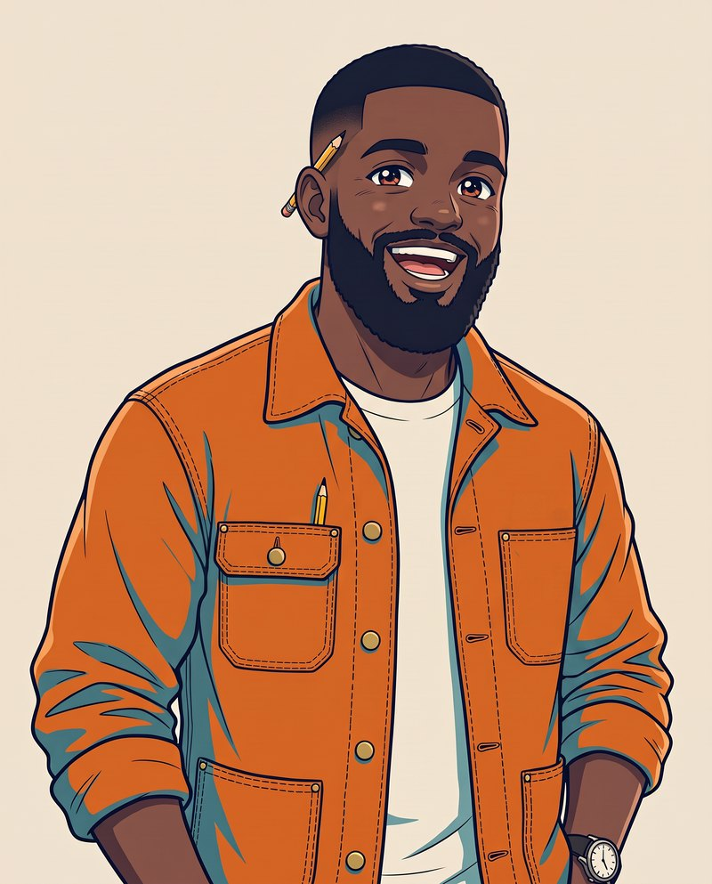
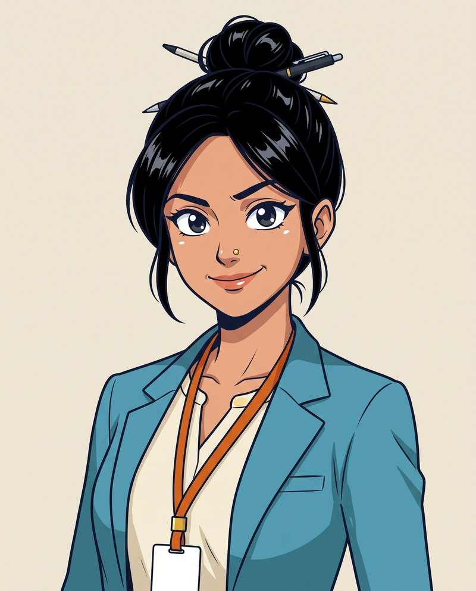
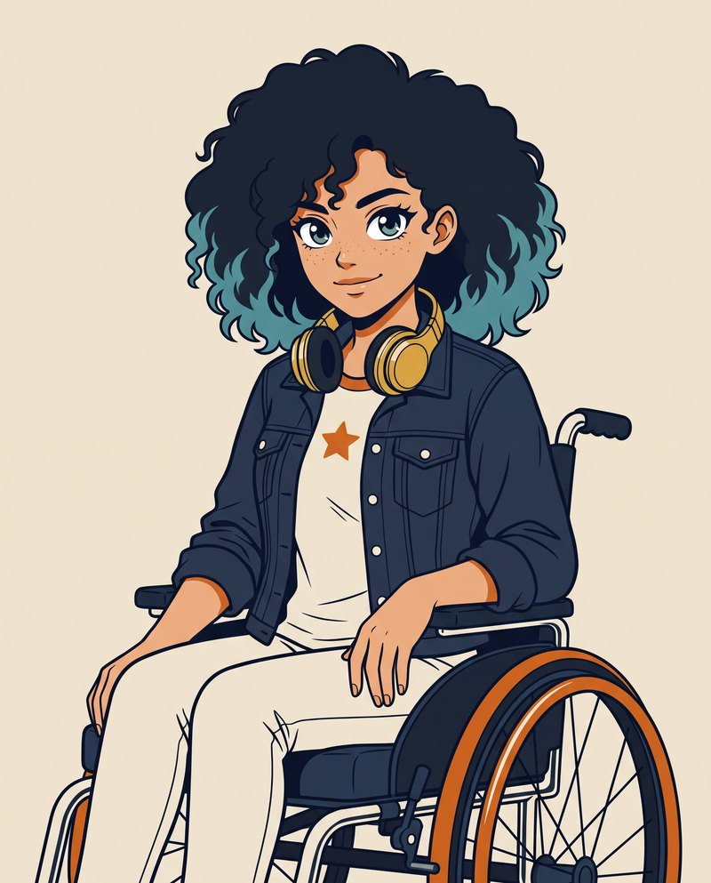
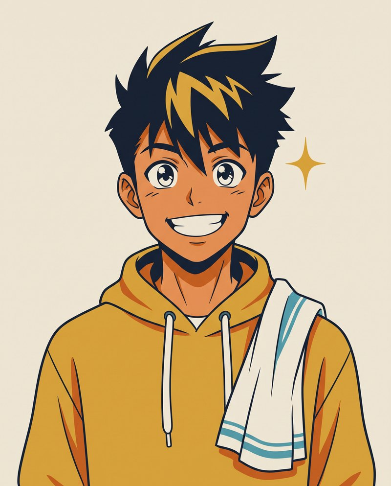
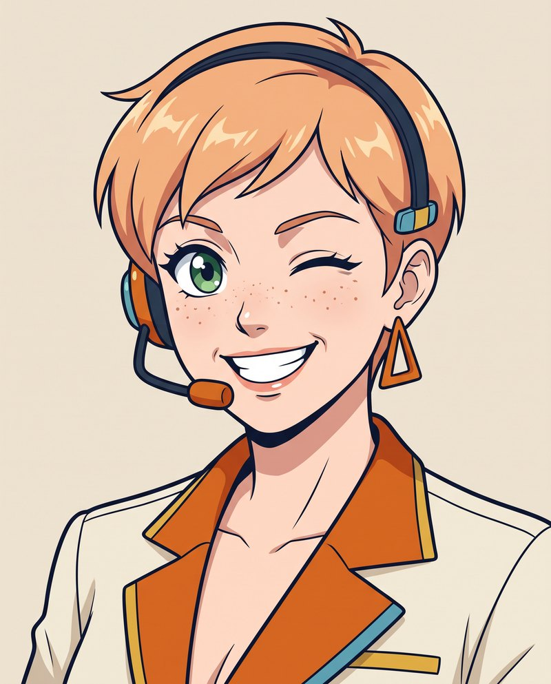
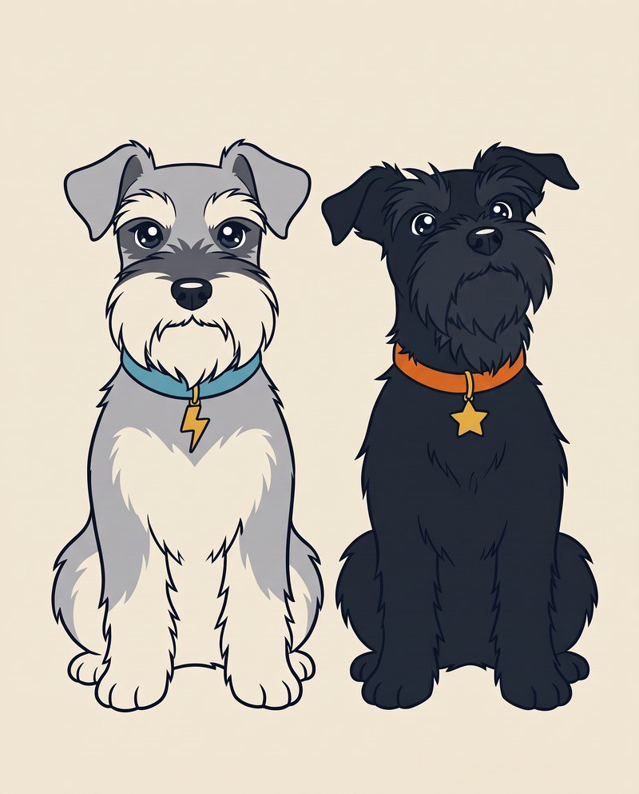

Meet the Commons.
One Hertfordshire family. Both sides of the recruitment desk. A redundant night-shift legend, a small employer, an HR lead, a ghosted graduate, a future chef, a returner and two very loud schnauzers. Every one of them is who The Com'mon People is for.

Nan Dee
Marcus
Priya
Zara
Kai
Auntie Lou
Bowie & OzzyGrab a cuppa. It's episode time.
Three generations, two dogs, one very busy group chat.
Tap a card to flip it and find out what each of them is up against, and which free resource gets them out of it.
Which Common are you?
Three questions. No email address required. Obviously.
The episode guide.
Every episode ends with the free guide or tool that would have saved them a lot of bother. New episodes land every Friday.
Let Bowie and Ozzy bring you the news.
Get the monthly Loudspeaker for the best of the Commons, plus the guides, dispatches and apprenticeship updates behind every episode. Free to subscribe, free to share.